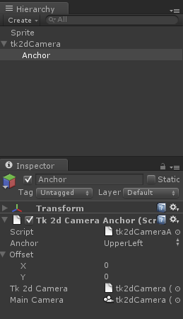

Documentation
Script Reference
Forum
Documentation
Script Reference
Forum
tk2dCamera has been updated and massively improved. Please refer to this page for more information.
The tk2dCamera is a solution to make it really simple to work in pixel units, and to make it automatically work with various resolutions without any user intervention.
In order for sprites to work seamlessly with tk2dCamera, you should tick the tk2dCamera tickbox in the sprite collection inspector. A similar tickbox exists for fonts, too.
Please keep in mind that while the tk2dCamera is compatible with sprites created with the old method, sprites created with the tk2dCamera tickbox enabled will not auto-size correctly with standard ortho cameras.
Create a tk2dCamera by clicking on "Create > tk2d > Camera" in the Hierarchy Window. Alternatively, you can find this menu in "Assets > Create > tk2d > Camera".
Make sure you don't have any other cameras in the scene, if you intend on using this camera as your primary 2D Camera.
Add a sprite to the scene. Refer to Creating a Sprite in the Editor. Set the sprite collection to DemoCameraSpriteCollection.
Position the sprite at (100, 100) by entering those numbers into the X and Y components of the transform.
tutorialtransform">
The sprite should be positioned 100 x 100 pixels into the screen, regardless of the resolution. In this example, the game window resolution is set to 480x320, and the heart is positioned 100 x 100 pixels.
Note: On occasion, when you change the resolution of the game window, the camera doesn't update immediately. Pressing play and stopping will fix the issue.
The tk2d camera also supports anchors. These anchors will anchor themselves to one of the 9 parts of the screen (corners & centers). You may also specify an offset in pixels for these anchors. The coordinate system for the anchors is exactly the same as the coordinate system for the camera - an offset of (-100, 20) means 100 pixels to the left, and 20 pixels up.
Select the tk2dCamera created in the previous step.
Click on Create Anchor in the inspector. A new anchor is created.
You can now set up the anchor by setting the Anchor point and Offset parameters.

Any sprites parented to this anchor will always be anchored to that relative position to the anchor. The hearts below are anchored to a "Top right" anchor and simply positioned using the transform widget.
Scene at 480x320
Same scene at 320x240